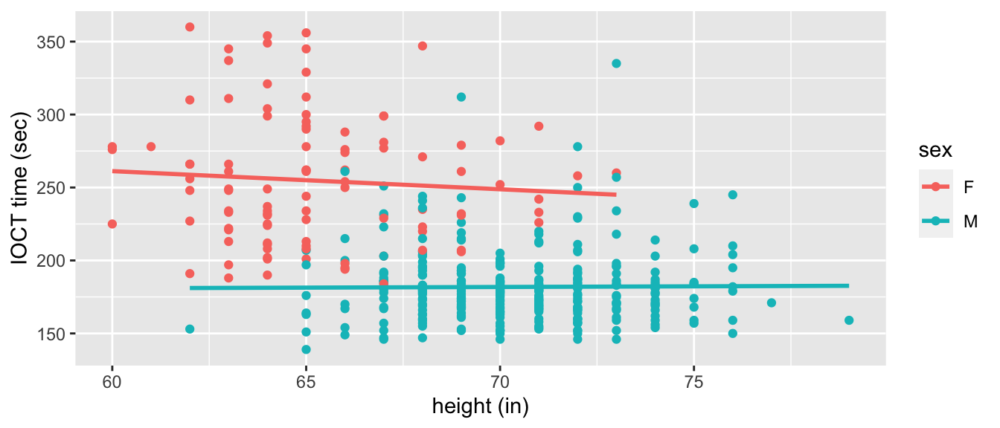
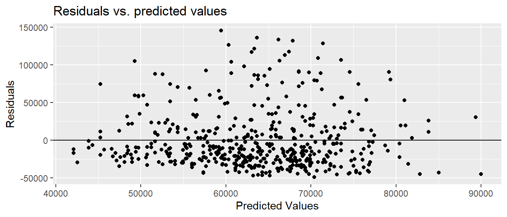
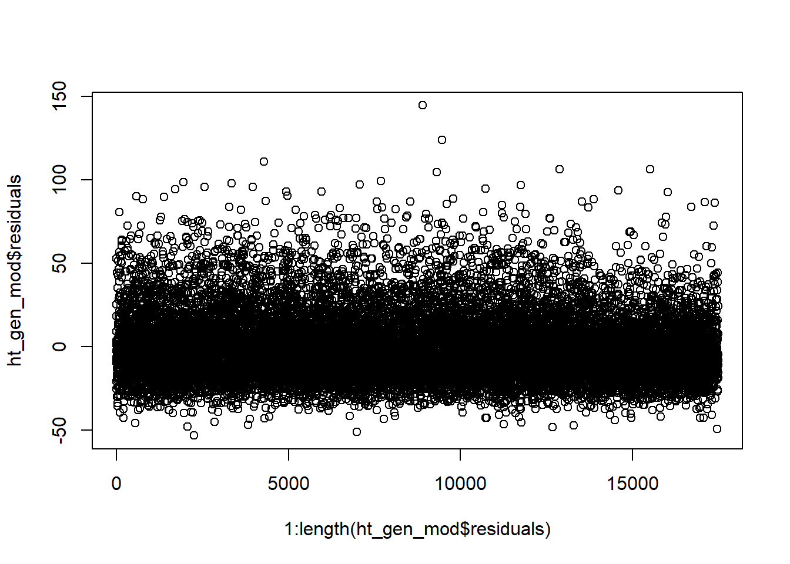

Chapter 6 Quantitative explanatory variable with quantitative confounding variable
Confounding variables can, of course, be quantitative as well. Here we will explore the situation where you have a quantitative treatment variable \((X)\), a quantitative response variable \((Y)\), and a quantitative confounding variable \((C)\). In fact, the ice cream example from the chapter 4 was just such a situation.
6.1 Unadjusted effect of \(X\) on \(Y\)
The file wage_data.csv on the course website contains a subset of wage data from the Center for Economic and Policy Research. It includes individual annual income from wages and salary (Earnings) for people who are above the poverty line but below the “top 2%.” [Do you think I should cite info for poverty line and top 2%?] We wish to explore the relationship between family size and earnings. A scatterplot indicates that there does appear to be a positive relationship between the two variables.
wage_dat<-read_csv("wage_data.csv")
wage_dat%>%
ggplot(aes(x=FamilySize, y=Earnings))+
geom_point()+
labs(x="Family Size", y = "Annual Earnings", title = "Family Size versus Annual Earnings")
If we were to consider only the treatment variable FamilySize and the response variable Earnings, we could use the following regression equation: \[\widehat{Earnings} = \beta_0+\beta_1*FamilySize\] Fitting this in R, we get the following results:
size_mod = lm(Earnings~FamilySize, data = wage_dat)
summary(size_mod)##
## Call:
## lm(formula = Earnings ~ FamilySize, data = wage_dat)
##
## Residuals:
## Min 1Q Median 3Q Max
## -41825 -28222 -13021 13383 141580
##
## Coefficients:
## Estimate Std. Error t value Pr(>|t|)
## (Intercept) 49013 4212 11.636 < 2e-16 ***
## FamilySize 4802 1272 3.775 0.000179 ***
## ---
## Signif. codes: 0 '***' 0.001 '**' 0.01 '*' 0.05 '.' 0.1 ' ' 1
##
## Residual standard error: 39120 on 498 degrees of freedom
## Multiple R-squared: 0.02782, Adjusted R-squared: 0.02587
## F-statistic: 14.25 on 1 and 498 DF, p-value: 0.0001792We see that there is a very significant effect of family size on earnings; for every additional member of the family, we expect to earn about $48702 more.
6.2 Effect of \(X\) on \(Y\) adjusting for \(C\)
However, there are a number of factors that are related to both earnings and family size, perhaps in a causal way. We will look at age. We expect to earn more as we age and get more experience in the workforce and possibly even more education. We also expect that, in general, family size will increase - or at least stay the same - as we get older. We can visually inspect our data to check this. Below is a graph of earnings versus age.
wage_dat%>%
ggplot(aes(x=`Age`,
y=`Earnings`))+
geom_point()+
geom_smooth(method = "lm", se=FALSE)+
theme_classic()
Age is a potential confounder. When we add age to the model with family size, we have the following regression model:
\[\widehat{Earnings}=\beta_0+\beta_1*FamilySize+\beta_2*Age\] When we estimate the coefficents for this model in R, we get the following results.
size_age_mod = lm(Earnings~FamilySize+Age, data = wage_dat)
summary(size_age_mod)##
## Call:
## lm(formula = Earnings ~ FamilySize + Age, data = wage_dat)
##
## Residuals:
## Min 1Q Median 3Q Max
## -48975 -26711 -12103 14107 145564
##
## Coefficients:
## Estimate Std. Error t value Pr(>|t|)
## (Intercept) 26643.8 8322.0 3.202 0.00145 **
## FamilySize 5534.1 1283.0 4.314 1.94e-05 ***
## Age 449.7 144.7 3.107 0.00199 **
## ---
## Signif. codes: 0 '***' 0.001 '**' 0.01 '*' 0.05 '.' 0.1 ' ' 1
##
## Residual standard error: 38790 on 497 degrees of freedom
## Multiple R-squared: 0.04635, Adjusted R-squared: 0.04251
## F-statistic: 12.08 on 2 and 497 DF, p-value: 7.551e-06We see that there is still a significant positive effect of family size on earnings, although it’s magnitude is slightly larger. We expect to earn about $5534 less per year for every additional member of the family after adjusting for age. We also note that the coefficient for age is 449.7, meaning that, for every year older a person is, we expect them to earn $450 more on average, after adjusting for family size. Of course, the relationship between family size and earnings is a complex one that would require a much more extensive analysis to fully understand.
6.3 Assessing model adequacy
Just like with previous regression models, these results might not mean much if our validity conditions aren’t met.
Here, we may be willing to believe that our assumption of independence is met by the way the data was collected. The CEPR data is from the Current Population Survey’s Annual Social and Economic Supplement (CPS ASEC or March Supplement). Surveyors use a random sample to survey about 60,000 occupied households by both telephone and in person surveys. Households come from all 50 states and the District of Columbia and are only in the sample pool for a limited time. Since respondents responses to survey questions are not dependent on another respondents, independence can be assumed.
To check for linearity and equal variance, we can plot the predicted values vs. the residuals.
size_age_mod%>%
fortify(wage_dat)%>%
ggplot(aes(x = .fitted, y = .resid))+
geom_point()+
geom_hline(yintercept = 0)+
labs( x = "Predicted Values", y = "Residuals", title = "Residuals vs. predicted values")
The linearity and constant variance conditions appear to be met. Although we have some large positive residuals, there does not appear to be a pattern and the width is relatively constant.
Our histogram, however, shows that the residuals seem to be skewed relatively heavily to the right. Our fourth validity condition, normality of the residuals, is likely not met. Although we can be comfortable in our estimates of the regression coefficients, we should be careful about drawing any conclusions about their statistical significance. (For a much more in depth assumption about assessing model adequacy, to include methods to handle violations of the validity conditions, take MA376!)
hist(size_age_mod$residuals)